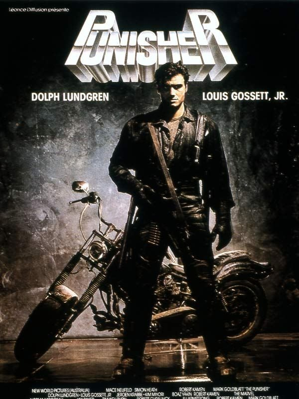
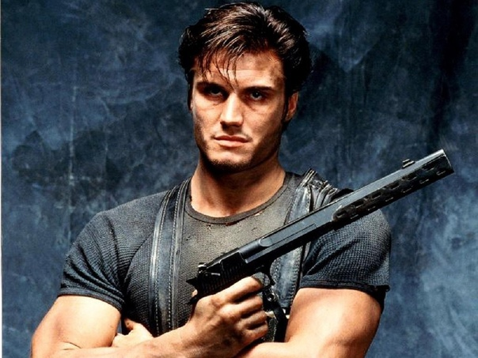
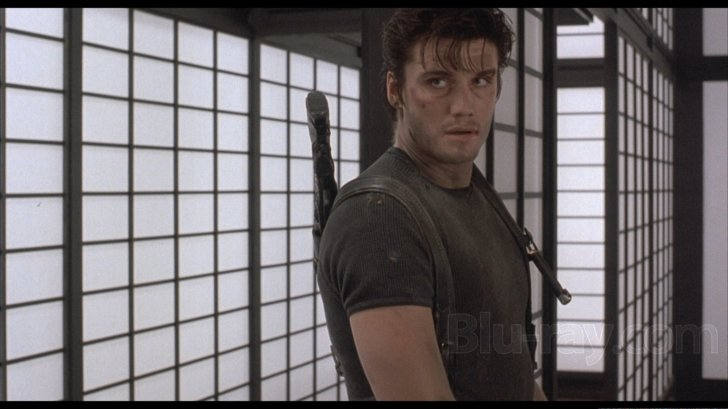

Celui-là, je l'ai connu bien avant de le voir.
La jaquette traînait quelque part — un vidéoclub, une étagère chez quelqu'un, je ne sais plus exactement où — mais elle m'avait marqué. Ce nom, Punisher, qui sonnait plus sombre que tout ce que je regardais à l'époque.
Je ne l'ai jamais loué. Jamais vu. Il est resté cette cassette qu'on regarde sans y toucher, qu'on devine plus qu'on ne connaît.
Il aura fallu attendre l'âge adulte pour enfin la glisser dans le lecteur — et découvrir que l'ambiance collait exactement à ce que cette jaquette promettait. Un film sombre, sale, sans aucune trace de l'humour qu'on associe d'habitude à ce genre de production.
Ce soir, on rattrape le temps perdu.

The Punisher — affiche française, 1989
The Punisher.
1989. Réalisé par Mark Goldblatt. Avec Dolph Lundgren, Louis Gossett Jr. et Jeroen Krabbé.
Produit par New World Pictures, sur un budget modeste, avec une ambition assumée : adapter le justicier Marvel sans les codes du comics — pas de costume, pas de crâne, pas de super-héros. Juste un homme brisé qui a choisi la vengeance comme mode de vie.
Sorti en salles dans une grande partie du monde — Europe, Australie, Amérique latine — le film n'a jamais eu de sortie cinéma aux États-Unis. Là-bas, il atterrit directement en vidéo, presque invisible dans son propre pays d'origine.
Dolph Lundgren y trouve un rôle à sa mesure — pas un héros lumineux, mais un homme rongé de l'intérieur, qui vit dans les égouts et ne sourit jamais.
The Punisher ne ressemble à aucune autre adaptation de comics de son époque.
1989.
Marvel n'est encore rien au cinéma. Pas de studio dédié, pas de stratégie à long terme — juste des droits vendus ici et là, souvent à des petites structures indépendantes. New World Pictures, en pleines difficultés financières, récupère ceux du Punisher et lance une adaptation à budget serré.
Le réalisateur, Mark Goldblatt, vient du montage — il a notamment travaillé sur Terminator et RoboCop — et signe ici l'une de ses rares réalisations. Le scénario, écrit par Boaz Yakin, prend une liberté radicale avec le matériau d'origine : pas de costume, pas de crâne sur la poitrine, aucun des codes visuels du comics. Frank Castle devient un vigilante brut, presque habillé en civil, qui vit littéralement sous terre.
Le tournage se déroule à Sydney, en Australie, qui double une ville américaine anonyme — une astuce de production courante à l'époque pour réduire les coûts.
Dolph Lundgren arrive sur ce projet juste après Red Scorpion, avant d'enchaîner sur Universal Soldier trois ans plus tard. Face à lui, Louis Gossett Jr., alors habitué des productions d'action après la saga Iron Eagle, et Jeroen Krabbé en antagoniste mafieux.
Le film ne cache jamais son budget limité. Mais il en fait une force — moins de spectacle, plus de noirceur brute.

Dolph Lundgren — The Punisher, 1989
Cinq ans après le massacre de sa femme et de ses trois enfants par la mafia, Frank Castle a disparu.
Officiellement mort, il vit désormais dans les égouts de la ville, sous une nouvelle identité — celle du Punisher. Depuis cinq ans, il traque et élimine méthodiquement les criminels responsables de la mort de sa famille, un par un, sans relâche.
Son ancien coéquipier, l'inspecteur Jake Berkowitz, sait qu'il est toujours en vie mais garde le silence, tiraillé entre le devoir et une loyauté qu'il ne parvient pas à effacer.
Quand une guerre de gangs éclate entre la mafia traditionnelle et le crime organisé yakuza, les enfants des chefs mafieux sont enlevés. Castle se retrouve alors face à un choix impossible — continuer sa croisade solitaire contre les hommes qu'il traque depuis des années, ou intervenir pour sauver des enfants innocents, ceux d'hommes qu'il exècre.
Ce n'est plus seulement une histoire de vengeance.
C'est la question de ce qu'il reste d'humain chez un homme qui a fait de la mort sa seule raison de vivre.
The Punisher assume une noirceur rare pour une adaptation de comics de 1989.
Le choix le plus radical du film, c'est justement ce qu'il retire. Pas de costume flamboyant, pas de gadget, pas de ton mi-figue mi-raisin. Frank Castle est filmé comme un homme rongé, presque monastique dans son austérité — il vit dans l'obscurité, mange à peine, ne parle presque pas. Le film traite la vengeance non pas comme une puissance de fantasme, mais comme une maladie lente qui a tout dévoré chez lui.
Dolph Lundgren joue ce rôle à contre-courant de ce qu'on attend de lui. Peu de répliques, un visage fermé, un regard vide plus que rageur. Ce n'est pas de la performance nuancée au sens où l'entend la critique traditionnelle — mais c'est une présence physique qui installe un malaise réel, loin de l'énergie habituelle de ses rôles d'action pure.
Le dilemme moral au cœur du film — sauver les enfants de ceux qu'il veut voir morts — évite au récit de sombrer dans le pur exercice de vengeance mécanique. Il y a une tentative, même maladroite, de poser une vraie question éthique au centre d'un film de série B.
Visuellement, le film mise sur des décors sombres, des égouts, des entrepôts — une esthétique urbaine crasseuse qui tranche avec l'imagerie plus lisse du comics.
The Punisher ne cherche jamais à être fidèle à la page. Il cherche à être fidèle à une idée — celle d'un homme qui a cessé d'être un homme.

Frank Castle, prêt à en découdre
The Punisher souffre d'un handicap structurel avant même sa sortie — il n'en a pas vraiment.
Sans distribution en salles aux États-Unis, le film part avec un désavantage que peu de productions surmontent. Pas de campagne de presse américaine, pas de critiques dans les grands journaux, pas de bouche-à-oreille de sortie cinéma. Il existe d'abord ailleurs dans le monde, puis atterrit directement dans les rayons vidéo chez lui — une inversion complète du parcours habituel.
S'ajoute à ça un problème d'identité plus profond. Les fans de comics, au moment de sa sortie, attendent une fidélité visuelle au personnage — le crâne, le costume, l'imagerie reconnaissable. Le film choisit délibérément de s'en détourner, ce qui déçoit une partie du public qui venait chercher autre chose.
Et puis il y a la comparaison inévitable avec l'adaptation de 2004, plus fidèle au matériau d'origine, qui a fini par s'imposer dans la mémoire collective comme LA version du Punisher au cinéma — reléguant celle de 1989 au rang de curiosité pour connaisseurs.
Un film sorti au mauvais endroit, dans le mauvais ordre, pour le mauvais public.
Ça laisse des traces.
Parce que c'est une des adaptations de comics les plus radicales de son époque — celle qui a osé retirer tous les codes visuels du genre pour ne garder que l'os.
Parce que Dolph Lundgren y trouve un registre différent de ce qu'on lui connaît ailleurs cette saison. Pas de one-liner, pas de sourire en coin. Un homme vidé, presque muet, qui porte le film sur sa seule présence physique.
Et parce qu'avant que Marvel ne devienne le géant qu'on connaît aujourd'hui, ce genre de tentative — modeste, imparfaite, mais sincère dans son intention — existait déjà. The Punisher appartient à cette préhistoire des adaptations de comics, avant que le genre ne trouve sa formule.
C'est un film qui ne ressemble à rien d'autre dans cette programmation.
Il y a cette image qui reste, longtemps après le générique — Frank Castle seul dans l'obscurité de son sous-sol, entouré des tatouages qu'il grave sur son propre corps à chaque exécution. Pas un mot. Juste ce geste, répété, comme un compte qu'on ne finit jamais de faire.
Troisième apparition de Dolph Lundgren cette saison, et probablement la plus âpre des trois. Après le direct-to-video pur de Joshua Tree et le téléfilm signé Woo, place à cette tentative sombre et sans concession de dire quelque chose sur ce qu'il reste d'un homme quand la vengeance est devenue sa seule identité.
Est-ce qu'on peut sauver quelqu'un tout en restant définitivement perdu soi-même ?
Le film ne répond pas vraiment. Il se contente de filmer un homme qui essaie.
La cassette est dans le lecteur. On rembobine.
Titre original
The Punisher
Pays
États-Unis / Australie
Genre
Action
Durée
89 min
Producteur
New World Pictures
Avec aussi
Louis Gossett Jr. · Jeroen Krabbé
Fil conducteur
Dolph Lundgren — Saison 1 (3/3)
Note
Jamais sorti en salles aux États-Unis
Regarder l'épisode
SOMEDAY — S2 EP. 06